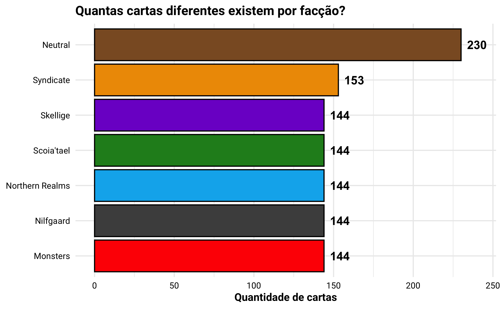
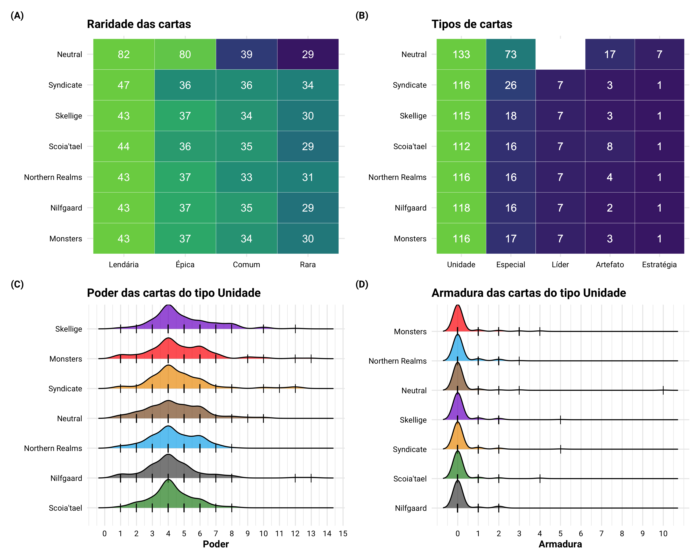
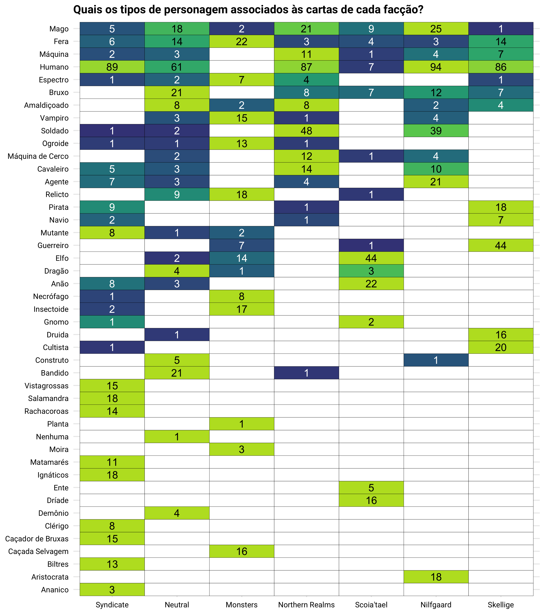
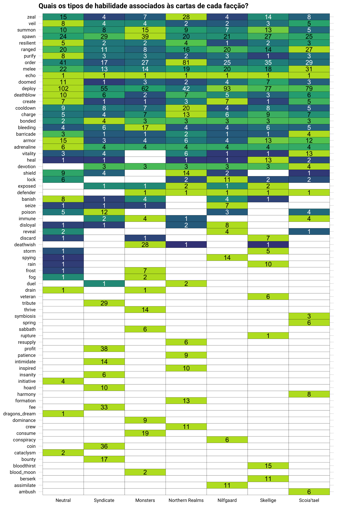
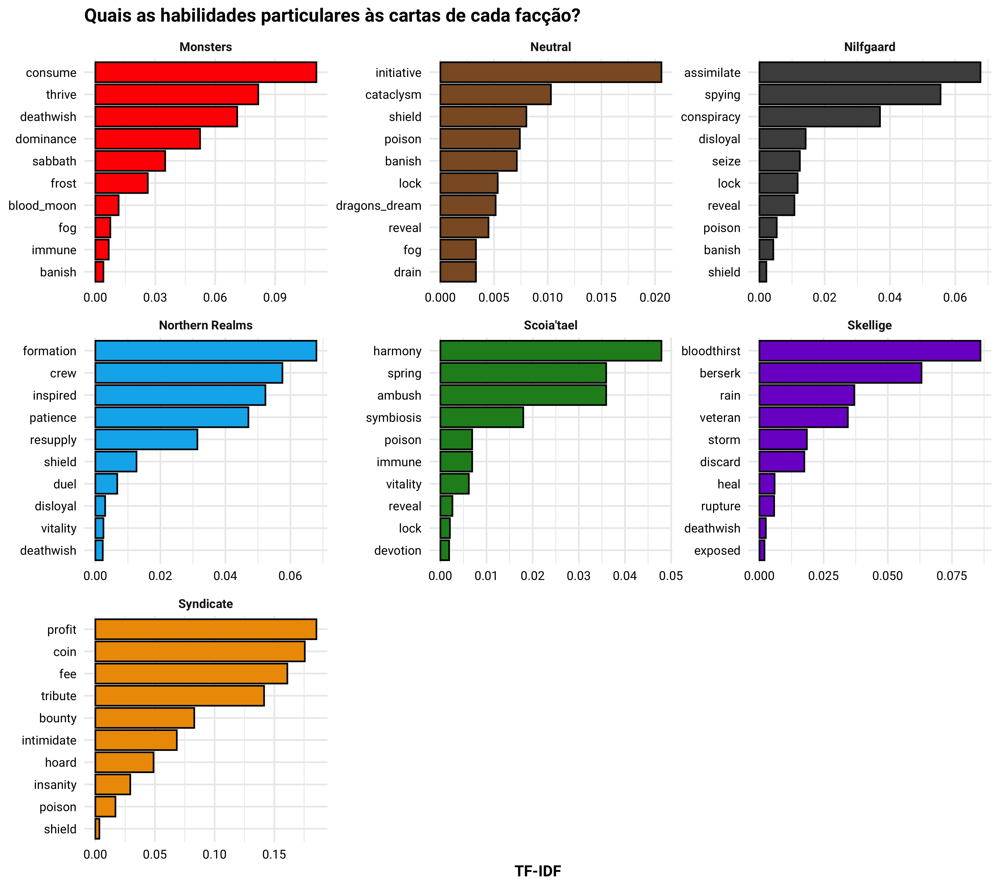
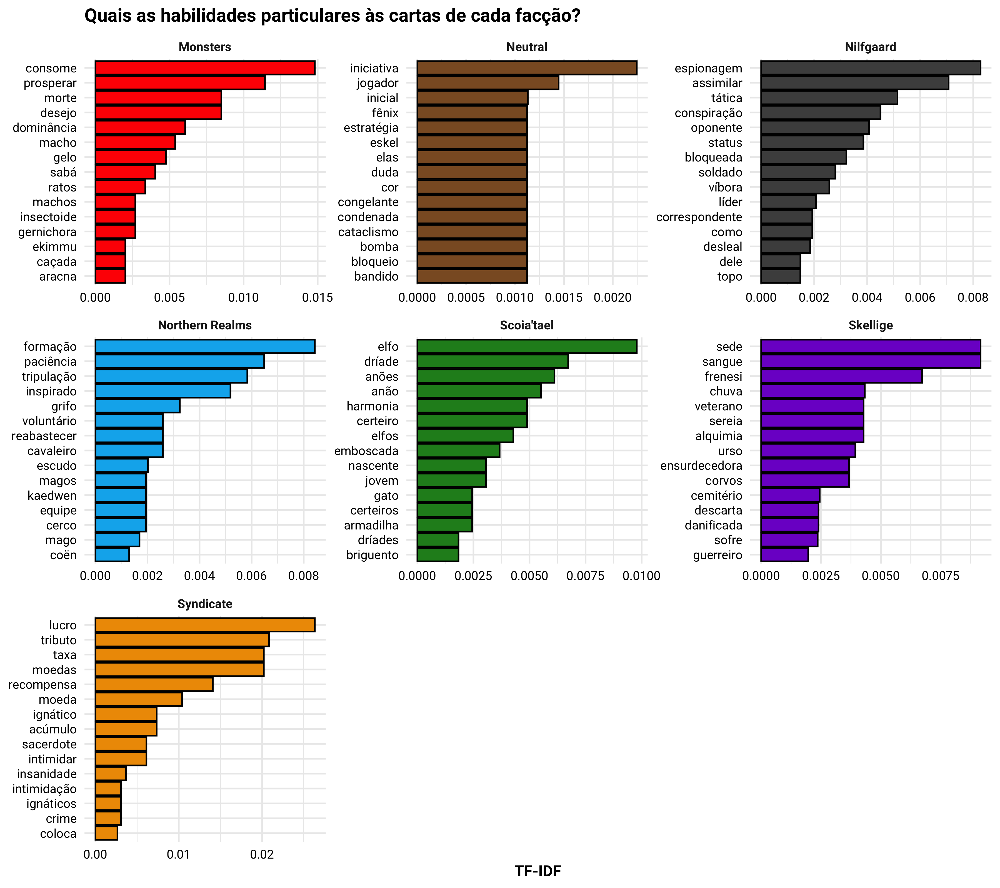
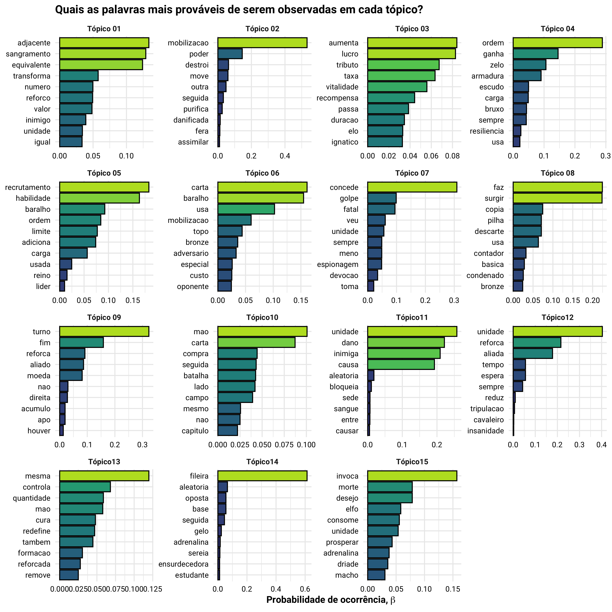
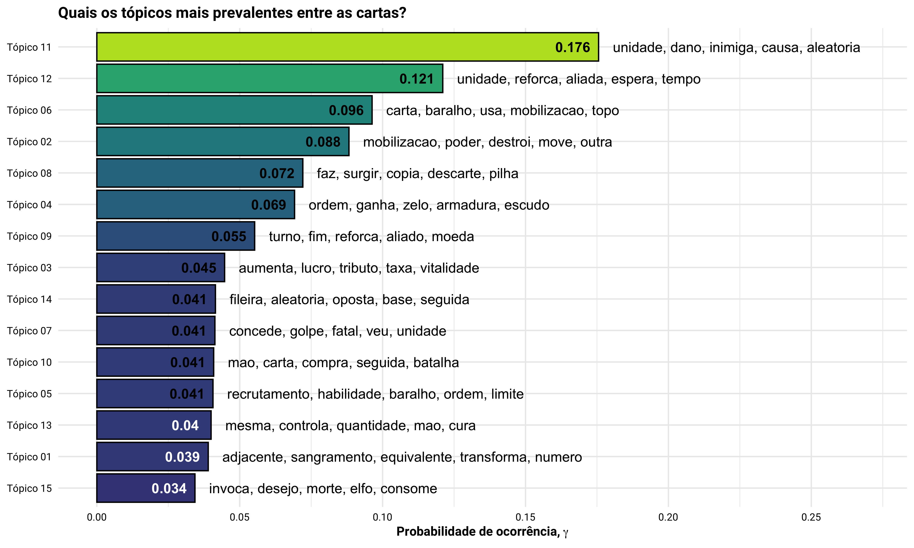
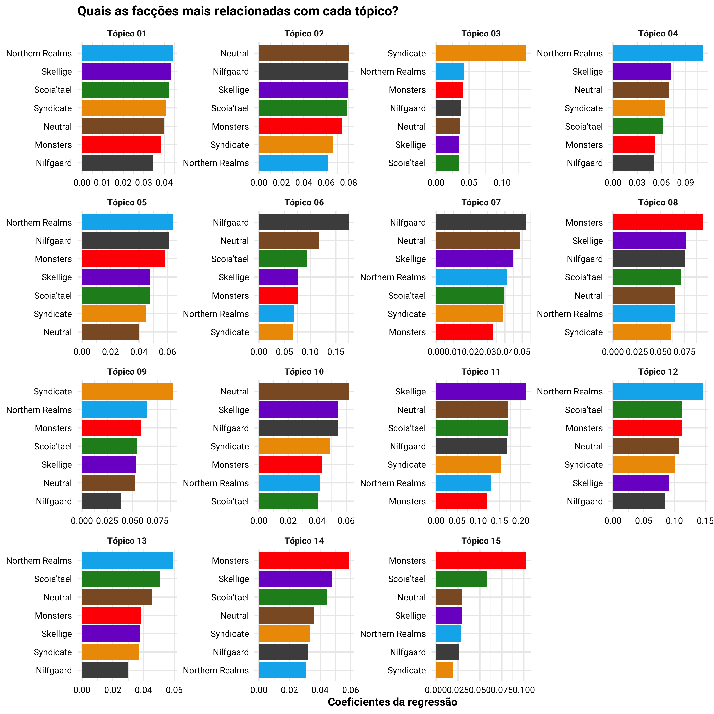

Motivação
Carregando os Dados
# carregando os pacotes
library(tidyverse) # core
library(tidytext) # para manipular texto
library(patchwork) # para compor figuras
library(ggridges) # para o ridge plot
library(stringi) # para trabalhar com texto
# carregando os dados
cartas <- read_rds(file = 'data/cartas.rds')
# cartas <- read_rds(file = '_posts/2022-01-31-card-embeddings-parte-1/data/cartas.rds')
# ajustando a tabela por conta de duas cartas má registradas
cartas <- cartas %>%
# removendo a carta Solução Engenhosa, que aparece duas vezes por conta de diferencas
# em seu nome em ingles
filter(!(localizedName == 'Solução engenhosa' & name != 'Blueprint')) %>%
# ajustando o nome da carta Vidente, que aparece duas vezes pois existe uma na facção
# neutra e outra na Scoia'tael, mas sao cartas diferentes
mutate(
localizedName = case_when(localizedName == 'Vidente' ~ paste0(localizedName, ' (', slug, ')'),
TRUE ~ localizedName)
) %>%
# colocando as cartas em ordem alfabetica
arrange(localizedName)
cartas
# A tibble: 1,103 × 19
localizedName name short slug rarity cardGroup type categoryName
<chr> <chr> <chr> <chr> <chr> <chr> <chr> <chr>
1 A Fera The … mon Mons… Épica gold Unid… Espectro
2 A prática le… Prac… nor Nort… Rara bronze Espe… Feitiço
3 A Terra das … Land… neu Neut… Lendá… gold Arte… Local
4 A Trufa Carn… The … neu Neut… Lendá… gold Arte… Local
5 Abaya Abaya mon Mons… Épica gold Unid… Necrófago
6 Aberrações d… Whor… syn Synd… Épica gold Unid… Humano, Bil…
7 Abominação S… Sala… syn Synd… Rara bronze Unid… Fera, Mutan…
8 Acônito Wolf… neu Neut… Lendá… gold Espe… Nenhuma
9 Açougueiro d… Sval… ske Skel… Comum bronze Unid… Humano, Cul…
10 Adaga Cerimo… Cere… neu Neut… Lendá… gold Estr… Estratégia
# … with 1,093 more rows, and 11 more variables: ownable <lgl>,
# decks <int>, craftingCost <int>, power <int>,
# provisionsCost <int>, armour <int>, keywords <chr>, texto <chr>,
# fluff <chr>, small <chr>, big <chr>Análise Exploratória de Dados
Quantas cartas diferentes existem por facção?
cartas %>%
# contando quantidade de cartas existentes por faccao
count(slug, name = 'n_cartas') %>%
# ordenando as colunas
mutate(slug = fct_reorder(.f = slug, .x = n_cartas)) %>%
# criando a figura
ggplot(mapping = aes(x = n_cartas, y = slug, fill = slug)) +
geom_col(color = 'black', show.legend = FALSE) +
geom_text(mapping = aes(label = n_cartas), nudge_x = 10, fontface = 'bold') +
scale_fill_manual(values = cores_por_faccao) +
labs(
title = 'Quantas cartas diferentes existem por facção?',
x = 'Quantidade de cartas'
) +
theme(axis.title.y = element_blank())

Quais as diferenças nas características das cartas?
Show code
## raridade das cartas por faccao
fig_raridade <- cartas %>%
# contando quantidade de cartas existentes por faccao
count(slug, rarity, name = 'n_cartas') %>%
# ordenando as colunas
mutate(
slug = fct_reorder(.f = slug, .x = n_cartas, .fun = sum, .desc = FALSE),
rarity = fct_reorder(.f = rarity, .x = n_cartas, .fun = sum, .desc = TRUE),
) %>%
# agrupando pela raridade
group_by(slug) %>%
# calculando a proporcao de cartas por faccao
mutate(
proporcao = n_cartas / max(n_cartas)
) %>%
# criando a figura
ggplot(mapping = aes(y = slug, x = rarity, fill = proporcao)) +
geom_tile(color = 'white', show.legend = FALSE) +
geom_text(mapping = aes(label = n_cartas), color = 'white') +
scale_fill_viridis_c(begin = 0.1, end = 0.8) +
labs(title = 'Raridade das cartas') +
theme(axis.title = element_blank())
# tipo de carta por faccao
fig_tipo <- cartas %>%
# contando quantidade de cartas existentes por faccao
count(slug, type, name = 'n_cartas') %>%
# ordenando as colunas
mutate(
type = fct_reorder(.f = type, .x = n_cartas, .fun = sum, .desc = TRUE),
slug = fct_reorder(.f = slug, .x = n_cartas, .fun = sum, .desc = FALSE)
) %>%
# agrupando pela raridade
group_by(slug) %>%
# calculando a proporcao de cartas por faccao
mutate(
proporcao = n_cartas / max(n_cartas)
) %>%
# completando todas as combinacoes de tipo e faccao
complete(slug, type) %>%
# criando a figura
ggplot(mapping = aes(y = slug, x = type, fill = proporcao)) +
geom_tile(color = 'white', show.legend = FALSE) +
geom_text(mapping = aes(label = n_cartas), color = 'white') +
scale_fill_viridis_c(begin = 0.1, end = 0.8, na.value = 'white') +
labs(title = 'Tipos de cartas') +
theme(axis.title = element_blank())
# poder das cartas por faccao
fig_poder <- cartas %>%
# pegando apenas as cartas de unidade
filter(type == 'Unidade') %>%
# ordenando as colunas
mutate(slug = fct_reorder(.f = slug, .x = power, .fun = mean)) %>%
# criando a figura
ggplot(mapping = aes(x = power, y = slug, fill = slug)) +
geom_density_ridges(scale = 0.95, show.legend = FALSE,
jittered_points = TRUE,
position = position_points_jitter(width = 0.01, height = 0),
point_shape = '|', point_size = 3, point_alpha = 1, alpha = 0.7) +
scale_fill_manual(values = cores_por_faccao) +
scale_x_continuous(breaks = seq(from = 0, to = 15, by = 1)) +
labs(
title = 'Poder das cartas do tipo Unidade',
x = 'Poder'
) +
theme(axis.title.y = element_blank())
# poder das cartas por faccao
fig_armadura <- cartas %>%
# pegando apenas as cartas de unidade
filter(type == 'Unidade') %>%
# ordenando as colunas
mutate(slug = fct_reorder(.f = slug, .x = armour, .fun = mean)) %>%
# criando a figura
ggplot(mapping = aes(x = armour, y = slug, fill = slug)) +
geom_density_ridges(scale = 0.95, show.legend = FALSE,
jittered_points = TRUE,
position = position_points_jitter(width = 0.01, height = 0),
point_shape = '|', point_size = 3, point_alpha = 1, alpha = 0.7) +
scale_fill_manual(values = cores_por_faccao) +
scale_x_continuous(breaks = seq(from = 0, to = 10, by = 1)) +
labs(
title = 'Armadura das cartas do tipo Unidade',
x = 'Armadura'
) +
theme(axis.title.y = element_blank())
# compondo a figura
(fig_raridade + fig_tipo) / (fig_poder + fig_armadura) +
plot_annotation(tag_levels = 'A', tag_prefix = '(', tag_suffix = ')') &
theme(plot.tag = element_text(size = 10, face = 'bold'))

De que forma as categorias das cartas de Unidade variam entre facções?
Show code
cartas %>%
# pegando apenas as cartas de unidade
filter(type == 'Unidade') %>%
# quebrando o string em tokens
unnest_tokens(output = token, input = categoryName, to_lower = FALSE,
token = 'regex', pattern = ', ') %>%
# contando as categorias por faccao
count(slug, token, name = 'ocorrencias') %>%
# contando quantas vezes cada token aparece entre as faccoes
add_count(token, name = 'faccoes_nos_tokens') %>%
# contando quantas vezes as faccoes aparecem entre os tokens
add_count(slug, name = 'tokens_nas_faccoes') %>%
# agrupando por faccao
mutate(
token = fct_reorder(.f = token, .x = faccoes_nos_tokens, .desc = FALSE),
slug = fct_reorder(.f = slug, .x = tokens_nas_faccoes, .desc = TRUE)
) %>%
# agrupando pelo token
group_by(token) %>%
# proporcao de vezes que cada token aparece entre as faccoes
mutate(proporcao = ocorrencias / max(ocorrencias)) %>%
# desagrupando o dataframe
ungroup %>%
# completando as combinacoes faltantes de token e faccao
complete(token, slug) %>%
# criando a figura
ggplot(mapping = aes(x = slug, y = token, fill = proporcao)) +
geom_tile(color = 'black', show.legend = FALSE) +
geom_text(mapping = aes(label = ocorrencias, color = proporcao > 0.5), show.legend = FALSE) +
scale_fill_viridis_c(begin = 0.2, end = 0.9, na.value = 'white') +
scale_color_manual(values = c('white', 'black')) +
labs(
title = 'Quais os tipos de personagem associados às cartas de cada facção?'
) +
theme(
axis.title = element_blank()
)

Quais as habilidades mais comuns das cartas por facção?
Show code
cartas %>%
# quebrando o string em tokens
unnest_tokens(output = token, input = keywords, to_lower = FALSE,
token = 'regex', pattern = ';') %>%
# removendo os NAs
filter(!is.na(token)) %>%
# contando as categorias por faccao
count(slug, token, name = 'ocorrencias') %>%
# contando quantas vezes cada token aparece entre as faccoes
add_count(token, name = 'faccoes_com_token') %>%
# contando quantas vezes as faccoes aparecem entre os tokens
add_count(slug, name = 'tokens_nas_faccoes') %>%
# agrupando por faccao
mutate(
token = fct_reorder(.f = token, .x = faccoes_com_token, .desc = FALSE),
slug = fct_reorder(.f = slug, .x = tokens_nas_faccoes, .desc = TRUE)
) %>%
# agrupando pelo token
group_by(token) %>%
# proporcao de vezes que cada token aparece entre as faccoes
mutate(proporcao = ocorrencias / max(ocorrencias)) %>%
# desagrupando o dataframe
ungroup %>%
# completando as combinacoes faltantes de token e faccao
complete(token, slug) %>%
# criando a figura
ggplot(mapping = aes(x = slug, y = token, fill = proporcao)) +
geom_tile(color = 'black', show.legend = FALSE) +
geom_text(mapping = aes(label = ocorrencias, color = proporcao > 0.5), show.legend = FALSE) +
scale_fill_viridis_c(begin = 0.2, end = 0.9, na.value = 'white') +
scale_color_manual(values = c('white', 'black')) +
labs(
title = 'Quais os tipos de habilidade associados às cartas de cada facção?'
) +
theme(
axis.title = element_blank()
)

Habilidades únicas às facções.
Show code
cartas %>%
# quebrando o string em tokens
unnest_tokens(output = token, input = keywords, to_lower = FALSE,
token = 'regex', pattern = ';') %>%
# removendo os NAs
filter(!is.na(token)) %>%
# contando as categorias por faccao
count(slug, token, name = 'ocorrencias') %>%
# calculando o tf-idf
bind_tf_idf(term = token, document = slug, n = ocorrencias) %>%
# agrupando pela faccao
group_by(slug) %>%
# pegando os 10 tokens com maior tf-idf
slice_max(order_by = tf_idf, n = 10, with_ties = FALSE) %>%
# desagrupando
ungroup %>%
# ordenando as colunas
mutate(token = reorder_within(x = token, by = tf_idf, within = slug)) %>%
# criando a figura
ggplot(mapping = aes(x = tf_idf, y = token, fill = slug)) +
facet_wrap(~ slug, scales = 'free') +
geom_col(color = 'black', show.legend = FALSE) +
scale_y_reordered() +
scale_fill_manual(values = cores_por_faccao) +
labs(
title = 'Quais as habilidades particulares às cartas de cada facção?',
x = 'TF-IDF'
) +
theme(axis.title.y = element_blank())

Texto da carta.
Show code
cartas %>%
# quebrando o string em tokens
unnest_tokens(output = token, input = texto, to_lower = TRUE) %>%
# removendo os NAs e algumas palavras que não ajudam a visualização
filter(!is.na(token),
str_detect(string = token, pattern = "scoia'tael|reinos|skellige|norte|dos", negate = TRUE)) %>%
# contando as categorias por faccao
count(slug, token, name = 'ocorrencias') %>%
# calculando o tf-idf
bind_tf_idf(term = token, document = slug, n = ocorrencias) %>%
# agrupando pela faccao
group_by(slug) %>%
# pegando os 15 tokens com maior tf-idf
slice_max(order_by = tf_idf, n = 15, with_ties = FALSE) %>%
# desagrupando
ungroup %>%
# ordenando as colunas
mutate(token = reorder_within(x = token, by = tf_idf, within = slug)) %>%
# criando a figura
ggplot(mapping = aes(x = tf_idf, y = token, fill = slug)) +
facet_wrap(~ slug, scales = 'free') +
geom_col(color = 'black', show.legend = FALSE) +
scale_y_reordered() +
scale_fill_manual(values = cores_por_faccao) +
labs(
title = 'Quais as habilidades particulares às cartas de cada facção?',
x = 'TF-IDF'
) +
theme(axis.title.y = element_blank())

Ajustando um modelo de tópicos
Lista de stopwords personalizada.
my_stopwords <- c('a', 'ao', 'aos', 'ate', 'cada', 'com', 'as', 'como', 'da', 'das',
'de', 'dela', 'delas', 'dele', 'desta', 'deste', 'destas', 'destes',
'deles', 'do', 'dos', 'disso', 'e', 'es', 'em', 'esta', 'ela', 'ele',
'elas', 'eles', 'for', 'foi', 'la', 'lhe', 'mais', 'nas', 'nesta',
'na', 'nas', 'nela', 'nele', 'no', 'nos', 'o', 'os', 'ou', 'para',
'por', 'pelo', 'que', 'sao', 'se', 'so', 'sos', 'sem', 'seu', 'seus',
'sua', 'suas', 's', 'si', 'todas', 'todos', 'tem', 'um', 'uma', 'voce',
'vez', 'longa', 'distancia', 'corpo', 'duas', 'dois', 'metade', 'reino',
'norte', "scoia'tael", 'skellige', 'nilfgaard', 'sindicato', 'neutra',
'concede', 'tiver', 'seguida', 'seja', 'caso', 'faz', 'usa', 'usar',
'usando', 'usada', 'usado', 'tambem', 'houver', 'ha', 'pela', 'mesma',
'tiver', 'nao', 'nessa', 'nessas', 'nesse', 'nesses', 'qualquer',
'estiver', 'entre', 'unidade', 'unidades', 'mobilizacao')
Preparando os dados.
# contando ocorrencias de cada token por faccao
df_tokens <- cartas %>%
# quebrando o string em tokens
unnest_tokens(output = token, input = texto) %>%
# removendo acentuacao
mutate(token = stri_trans_general(str = token, id = 'Latin-ASCII')) %>%
# removendo stopwords
filter(!token %in% my_stopwords) %>%
# removendo os digitos
filter(str_detect(string = token, pattern = '[0-9]', negate = TRUE)) %>%
# substituindo algumas formas
mutate(
token = str_replace(string = token, pattern = '(?<=o|a)s$', replacement = ''),
token = str_replace(string = token, pattern = '(?<=d|t)es$', replacement = 'e'),
token = str_replace(string = token, pattern = '(?<=r)es$', replacement = ''),
token = str_replace(string = token, pattern = 'envenenamento|envenenad[ao]', replacement = 'envenena'),
token = str_replace(string = token, pattern = 'bloqueada|bloquei[ao]', replacement = 'bloqueio'),
token = str_replace(string = token, pattern = 'reforcad[ao]', replacement = 'reforcada'),
token = str_replace(string = token, pattern = 'aleatoriamente', replacement = 'aleatorio'),
token = str_replace(string = token, pattern = 'aleatoria', replacement = 'aleatorio'),
) %>%
# contando ocorrencia dos lemmas por carta
count(localizedName, token, name = 'ocorrencias')
df_tokens
# A tibble: 7,834 × 3
localizedName token ocorrencias
<chr> <chr> <int>
1 A Fera batalha 1
2 A Fera campo 1
3 A Fera fim 1
4 A Fera maior 1
5 A Fera poder 1
6 A Fera reforca 1
7 A Fera turno 1
8 A prática leva à perfeição aleatorio 1
9 A prática leva à perfeição aliado 1
10 A prática leva à perfeição aumenta 1
# … with 7,824 more rowsLematizando os tokens e contando-os.
Show code
# carregando mais pacotes
library(spacyr) # para ajudar com lematizacao
# inicializando o spacy
spacy_initialize(model = 'pt_core_news_lg')
# criando uma base de-para para lemmatizar os tokens
de_para_lemma <- distinct(df_tokens, token) %>%
# colocando os tokens em um vetor
pull(token) %>%
# parseando os tokens para o spacyr
spacy_parse(pos = FALSE, tag = FALSE, lemma = TRUE, dependency = FALSE) %>%
# passando o resultado para um tibble
tibble %>%
# pegando apenas as colunas que interessam
select(token, lemma)
# lemmatizando os tokens e contando ocorrencias
df_tokens <- df_tokens %>%
# juntando o de-para de lemmas aos tokens
left_join(y = de_para_lemma, by = 'token') %>%
# contando ocorrencia dos lemmas por carta
count(localizedName, lemma, name = 'ocorrencias')
df_tokens
Criando matriz DFM.
# criando matriz no formato document-feature matrix
df_esparsa <- df_tokens %>%
cast_sparse(row = localizedName, column = token, value = ocorrencias)
Procurando o valor de K.
# carregando mais pacotes
library(stm) # para a modelagem de topicos
library(furrr) # para paralelizar a busca
# setando a seed
set.seed(33)
# setando o processamento paralelo
plan(multisession)
# buscando melhor valor de K
search_K <- tibble(
K = seq(from = 6, to = 30, by = 3)
) %>%
mutate(
# rodando o STM sem nenhuma feature
padrao = future_map(.x = K,
.f = ~ stm(documents = df_esparsa, init.type = 'Spectral',
seed = 333, K = .x, verbose = FALSE),
.options = furrr_options(seed = TRUE)
),
# passando a faccao para o content
features = future_map(.x = K,
.f = ~ stm(documents = df_esparsa, init.type = 'Spectral',
seed = 333, K = .x, content = ~ slug, data = cartas,
verbose = FALSE),
.options = furrr_options(seed = TRUE)
)
) %>%
pivot_longer(cols = c(padrao, features), names_to = 'tipo', values_to = 'modelos')
# setando o processamento sequencial
plan(sequential)
Extraindo métricas de avaliação.
Show code
# extraindo as metricas de avaliacao da clusterizacao
metricas <- search_K %>%
# calculando a exclusividade e a coerencia dos topicos
mutate(
exclusividade = map(.x = modelos, .f = safely(exclusivity)),
exclusividade = map(.x = exclusividade, .f = 'result'),
coerencia = map(.x = modelos, .f = semanticCoherence, documents = df_esparsa),
residuos = map(.x = modelos, .f = checkResiduals, df_esparsa),
residuos = map(.x = residuos, 'dispersion')
) %>%
# dropando a coluna com os modelos
select(-modelos) %>%
# desaninhando as colunas de coerencia e exclusividade
unnest(cols = c(exclusividade, coerencia, residuos))
# plotando as metricas individualmente
fig_painel_metricas <- metricas %>%
# passando a base para o formato longo
pivot_longer(cols = c(exclusividade, coerencia, residuos),
names_to = 'metrica', values_to = 'valor') %>%
# dropando valores nulos
drop_na() %>%
# agrupando pelo valor de K e da metrica
group_by(K, metrica, tipo) %>%
# calculando o valor da media da metrica por valor de K
summarise(
valor = mean(x = valor, na.rm = TRUE), .groups = 'drop'
) %>%
# renomeando as metricas
mutate(
metrica = case_when(metrica == 'coerencia' ~ 'Coerência Semântica',
TRUE ~ str_to_title(string = metrica))
) %>%
# criando a figura
ggplot(mapping = aes(x = as.factor(K), y = valor, group = tipo, color = tipo)) +
facet_wrap(~ metrica, scales = 'free') +
geom_line(size = 1, show.legend = FALSE) +
geom_point(fill = 'white', color = 'black', shape = 21, size = 3, show.legend = FALSE) +
labs(
caption = 'A linha azul representa o modelo que não contempla que a ocorrência das palavras pode variar dentro dos tópicos em função da identidade da facção.',
x = 'Quantidade de tópicos (K)',
y = 'Valor da métrica'
)
# plotando as metricas de coerencia vs exclusividade
fig_coerencia_exclusividade <- metricas %>%
# filtrando os resultado do modelo sem content
filter(tipo == 'padrao') %>%
# adicionando a sequencia do numero de topicos
mutate(
K = ifelse(test = K < 10, yes = paste0('0', K), no = K),
K = paste(K, 'tópicos')
) %>%
# criando a figura
ggplot(mapping = aes(x = coerencia, y = exclusividade, color = K)) +
facet_wrap(~ K) +
geom_point(shape = 16, size = 3, show.legend = FALSE) +
scale_color_viridis_d(direction = -1, begin = 0.2, end = 0.9) +
labs(
x = 'Coerência Semântica',
y = 'Exclusividade'
)
# criando o painel
(fig_painel_metricas / fig_coerencia_exclusividade) +
plot_layout(heights = c(1, 2)) +
plot_annotation(
title = 'Quantos tópicos devemos usar?',
subtitle = 'A quantidade de tópicos escolhida deve atender ao melhor balanço entre uma alta coerência semântica e exclusividade',
tag_levels = 'A', tag_prefix = '(', tag_suffix = ')') &
theme(plot.tag = element_text(size = 10, face = 'bold'))

Ajustando o modelo de tópicos
Entendendo os tópicos
Visualizando os topicos encontrados.
Show code
# criando figura das palavras por topicos
tidy(x = modelo, matrix = 'beta') %>%
# agrupando pelo topico
group_by(topic) %>%
# pegando as 10 palavras com maior afinade com cada tópico
slice_max(order_by = beta, n = 10, with_ties = FALSE) %>%
# criando escala numerica para colorir dentro dos topicos
mutate(escala = beta / max(beta)) %>%
# desagrupando os dados
ungroup %>%
# organizando as informacoes para plotar
mutate(
topic = ifelse(test = topic < 10,
yes = paste0('Tópico 0', topic), no = paste0('Tópico', topic)),
term = reorder_within(x = term, by = beta, within = topic)
) %>%
# criando a figura
ggplot(mapping = aes(x = beta, y = term, fill = escala)) +
facet_wrap(~ topic, scales = 'free', ncol = 4) +
geom_col(color = 'black', show.legend = FALSE) +
scale_y_reordered() +
scale_fill_viridis_c(begin = 0.2, end = 0.9) +
labs(
title = 'Quais as palavras mais prováveis de serem observadas em cada tópico?',
x = expression(bold(paste('Probabilidade de ocorrência, ', beta)))
) +
theme(axis.title.y = element_blank())

Visualizando os topicos encontrados - parte 2.
Show code
# extraindo os dados dos betas por topico
df_betas <- modelo$beta %>%
# pegando a matriz com o log das probabilidades para o beta
pluck('logbeta') %>%
# parseando as matrizes para um dataframe
map(.f = data.frame) %>%
# passando o log da probabilidade para probabilidade
map(.f = exp) %>%
# colocando o nome nas colunas
map(.f = ~ `colnames<-`(x = ., value = df_esparsa@Dimnames[[2]])) %>%
# adicionando o identificador do topico a cada linha
map(.f = mutate, topic = 1:n()) %>%
# renomeando os elementos da lista
`names<-`(value = c('Monsters', 'Neutral', 'Nilfgaard', 'Northern Realms',
"Scoia'tael", 'Skellige', 'Syndicate')) %>%
# juntando todos
map_dfr(tibble, .id = 'slug') %>%
# passando a base para o formato longo
pivot_longer(cols = -c(slug, topic), names_to = 'term', values_to = 'beta')
# criando figura das palavras por topicos
df_betas %>%
# agrupando pelo topico e token
group_by(topic, term) %>%
# calculando a media da probabilidade para aquele token naquele topico
summarise(beta = mean(x = beta, na.rm = TRUE), .groups = 'drop') %>%
# agrupando pelo topico
group_by(topic) %>%
# pegando as 10 palavras com maior afinade com cada tópico
slice_max(order_by = beta, n = 10, with_ties = FALSE) %>%
# criando escala numerica para colorir dentro dos topicos
mutate(escala = beta / max(beta)) %>%
# desagrupando os dados
ungroup %>%
# organizando as informacoes para plotar
mutate(
topic = ifelse(test = topic < 10,
yes = paste0('Tópico 0', topic), no = paste0('Tópico', topic)),
term = reorder_within(x = term, by = beta, within = topic)
) %>%
# criando a figura
ggplot(mapping = aes(x = beta, y = term, fill = escala)) +
facet_wrap(~ topic, scales = 'free', ncol = 4) +
geom_col(color = 'black', show.legend = FALSE) +
scale_y_reordered() +
scale_fill_viridis_c(begin = 0.2, end = 0.9) +
labs(
title = 'Quais as palavras mais prováveis de serem observadas em cada tópico?',
x = expression(bold(paste('Probabilidade de ocorrência, ', beta)))
) +
theme(axis.title.y = element_blank())
Visualizando a proporcao de topicos.
Show code
# criando tabela com as 5 palavras mais frequentes por topico para plotarmos abaixo
df_top_palavras <- tidy(x = modelo, matrix = 'beta') %>%
# agrupando pelo topico
group_by(topic) %>%
# pegando as 10 palavras com maior afinade com cada tópico
slice_max(order_by = beta, n = 5, with_ties = FALSE) %>%
# colocando essas palavras em um vetor
summarise(palavras = paste0(term, collapse = ', '))
# se usarmos o content quando rodar o STM, é necessário descomentar as linhas abaixo
# df_top_palavras <- df_betas %>%
# # agrupando pelo topico e token
# group_by(topic, term) %>%
# # calculando a media da probabilidade para aquele token naquele topico
# summarise(beta = mean(x = beta, na.rm = TRUE), .groups = 'drop') %>%
# # agrupando pelo topico
# group_by(topic) %>%
# # pegando as 10 palavras com maior afinade com cada tópico
# slice_max(order_by = beta, n = 5, with_ties = FALSE) %>%
# # colocando essas palavras em um vetor
# summarise(palavras = paste0(term, collapse = ', '))
# criando a figura de prevalencia por topico
tidy(x = modelo, matrix = 'gamma') %>%
# agrupando pelo topico
group_by(topic) %>%
# extraindo a media da probabilidade para cada topico
# esse é o valor esperado da prevalencia do tópico
summarise(
media = mean(x = gamma), .groups = 'drop'
) %>%
# juntando as 5 palavras mais frequentes por topico
left_join(y = df_top_palavras, by = 'topic') %>%
# reordenando as colunas
mutate(
topic = ifelse(test = topic < 10, yes = paste0('0', topic), no = topic),
topic = paste('Tópico', topic),
topic = fct_reorder(.f = topic, .x = media)
) %>%
# criando a figura
ggplot(mapping = aes(x = media, y = topic, fill = media)) +
geom_col(color = 'black', show.legend = FALSE) +
geom_text(mapping = aes(label = round(x = media, digits = 3), color = media <= 0.04),
nudge_x = -0.009, fontface = 'bold', show.legend = FALSE) +
geom_text(mapping = aes(label = palavras), nudge_x = 0.005, hjust = 0) +
scale_x_continuous(breaks = seq(from = 0, to = 0.25, by = 0.05),
limits = c(0, 0.27)) +
scale_fill_viridis_c(begin = 0.2, end = 0.9) +
scale_color_manual(values = c('black', 'white')) +
labs(
title = 'Quais os tópicos mais prevalentes entre as cartas?',
x = expression(bold(paste('Probabilidade de ocorrência, ', gamma)))
) +
theme(axis.title.y = element_blank())

Visualiza correlação entre topicos.
Show code
# carregando pacotes
library(heatmaply) # para o plot abaixo
# criando uma plot de correlacao entre os topicos
topicCorr(model = modelo) %>%
# pegando a matriz de correlacao
pluck('cor') %>%
# colocando o nome das dimensoes
`rownames<-`(value = paste0('Tópico ', 1:15)) %>%
`colnames<-`(value = paste0('Tópico ', 1:15)) %>%
# criando o heatmap
heatmaply(colors = rev(RColorBrewer::brewer.pal(n = 9, name = 'RdBu')))
Estimando a relacao entre topicos e metadados.
Show code
# estimando a contribuicao das features para explicar os clusters
explica_topicos <- estimateEffect(1:15 ~ 0 + slug, stmobj = modelo,
metadata = cartas, uncertainty = 'Global')
# pegando os slopes das regressoes
tidy(x = explica_topicos) %>%
# ajustando o nome dos termos e dos topicos
mutate(
term = str_remove(string = term, pattern = 'slug'),
term = str_replace_all(string = term, pattern = '\\(Intercept\\)', replacement = 'Monsters'),
cores = term,
topic = ifelse(test = topic < 10, yes = paste0('Tópico 0', topic), no = paste0('Tópico ', topic)),
term = reorder_within(x = term, by = estimate, within = topic)
) %>%
# criando a figura
ggplot(mapping = aes(x = estimate, y = term, fill = cores, group = 1)) +
facet_wrap(~ topic, scales = 'free', ncol = 4) +
geom_col(show.legend = FALSE) +
scale_y_reordered() +
scale_fill_manual(values = cores_por_faccao) +
labs(
title = 'Quais as facções mais relacionadas com cada tópico?',
x = 'Coeficientes da regressão'
) +
theme(axis.title.y = element_blank())

Utilizando os tópicos
Juntando probabilidades às cartas.
# pegando a matriz gamma - as probabilidade de cada topico por documento
embeddings <- tidy(x = modelo, matrix = 'gamma') %>%
# juntando o prefixo topic_ ao numero de cada topico
mutate(topic = paste0('topic_', topic)) %>%
# pivoteando a tabela para o formato largo
pivot_wider(id_cols = document, names_from = topic, values_from = gamma) %>%
# agrupando o dataframe por linha
rowwise() %>%
# extraindo o topico mais provavel por linha
mutate(
topK = which.max(c_across(contains('topic_'))),
topK = ifelse(test = topK < 10, yes = paste0('Tópico 0', topK), no = paste0('Tópico ', topK))
) %>%
# desagrupando o dataframe
ungroup %>%
# colocando o nome das cartas na coluna do nome do documento
mutate(document = cartas$localizedName) %>%
# juntando os metadados das cartas
left_join(y = cartas, by = c('document' = 'localizedName'))
embeddings
# A tibble: 1,103 × 35
document topic_1 topic_2 topic_3 topic_4 topic_5 topic_6 topic_7
<chr> <dbl> <dbl> <dbl> <dbl> <dbl> <dbl> <dbl>
1 A Fera 0.0340 0.0763 0.0301 0.0474 0.00876 0.0412 0.0185
2 A prática … 0.0331 0.0439 0.0311 0.0352 0.124 0.260 0.0159
3 A Terra da… 0.0215 0.0405 0.00754 0.0785 0.0493 0.469 0.0173
4 A Trufa Ca… 0.00820 0.0364 0.0159 0.0717 0.0348 0.260 0.0182
5 Abaya 0.0147 0.0839 0.00765 0.0292 0.0669 0.0452 0.0181
6 Aberrações… 0.0359 0.0847 0.179 0.0278 0.00472 0.00746 0.0358
7 Abominação… 0.0293 0.0729 0.194 0.0580 0.0106 0.0145 0.0207
8 Acônito 0.0302 0.123 0.0192 0.0179 0.00304 0.00847 0.0311
9 Açougueiro… 0.0697 0.133 0.0311 0.0387 0.00652 0.0122 0.0358
10 Adaga Ceri… 0.144 0.0849 0.0271 0.0964 0.0123 0.0128 0.102
# … with 1,093 more rows, and 27 more variables: topic_8 <dbl>,
# topic_9 <dbl>, topic_10 <dbl>, topic_11 <dbl>, topic_12 <dbl>,
# topic_13 <dbl>, topic_14 <dbl>, topic_15 <dbl>, topK <chr>,
# name <chr>, short <chr>, slug <chr>, rarity <chr>,
# cardGroup <chr>, type <chr>, categoryName <chr>, ownable <lgl>,
# decks <int>, craftingCost <int>, power <int>,
# provisionsCost <int>, armour <int>, keywords <chr>, …Ajustando TSNE.
Show code
# carregando o pacote
library(Rtsne) # para rodar o TSNE
library(plotly) # para visualizar o TSNE
# setando a seed
set.seed(33)
# ajustando o TSNE
tsne_results <- select(embeddings, contains('topic_')) %>%
# passando objeto para matrix
as.matrix() %>%
# ajustando tSNE
Rtsne(check_duplicates = FALSE, perplexity = 50)
# plotando resultados do TSNE
tsne_results %>%
# pegando os resultado do TSNE
pluck('Y') %>%
# passando para um dataframe
data.frame %>%
# renomeando as colunas
`names<-`(value = c('tsne1', 'tsne2')) %>%
# passando para um tibble
tibble %>%
# juntando com o nome das cartas
bind_cols(embeddings) %>%
# criando a figura
plot_ly(x = ~ tsne1, y = ~ tsne2, color = ~ slug, data = ., colors = cores_por_faccao,
mode = 'markers', type = 'scatter', marker = list(size = 7, opacity = 0.7),
hoverinfo = 'text',
hovertext = ~ paste0(
'<b>Tópico prevalente:</b> ', topK, '<br>',
'<b>Carta:</b> ', document, '<br>',
'<b>Raridade:</b> ', rarity, '<br>',
'<b>Tipo:</b> ', type, '<br>',
str_wrap(string = texto, width = 50)
)
) %>%
layout(xaxis = list(title = 'Dimensão 1'), yaxis = list(title = 'Dimensão 2'))
Conclusões
Possíveis Extensões
Dúvidas, sugestões ou críticas? É só me procurar pelo e-mail ou GitHub!